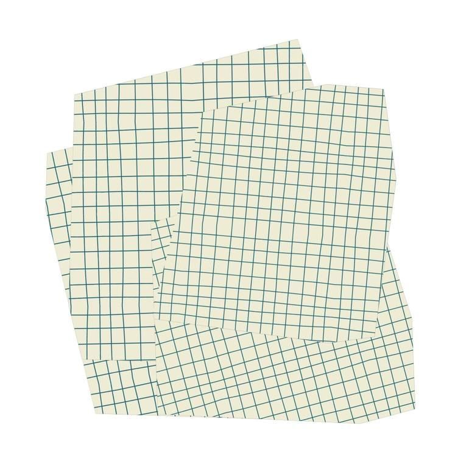

Architect Mini: Web-to-Print Template Builder
Architect Mini is a lightweight, embeddable widget designed to help printing shops and ecommerce platforms offer customizable, print-ready document templates, starting with a business card creator. The goal of the project was to build a streamlined, intuitive interface that allows users to personalize professionally designed layouts in real time and export them as high-quality files.
Traditional print-on-demand workflows often require customers to upload their own artwork or rely on cumbersome, external design tools. Architect Mini solves this by providing a guided, template-based design experience directly inside a vendor's website, making the process easier to use while producing more reliable print output.
The design process centered on simplicity first, real-time feedback, and guided creativity. Every field maps directly to a visible card element, users can preview changes as they type, and the system keeps layouts print-safe without overwhelming them with full design-tool complexity.
The initial release supports login-based project recall, required project naming, business card template selection, live editing, save prompts, PNG previewing, and print-ready PDF export. Future phases are planned to introduce light-weight editing controls like moving text, resizing type, repositioning logos, and changing text colors.
Back to Work
Users begin with a lightweight onboarding flow: a brief logo animation, a login screen so saved projects can be recalled later, and a required project name before they can move into editing or export.

This slot can show early drafting around the product structure, including how login, project naming, and template selection were organized into a clean first-use flow.

This slot is suited for UI exploration of the live-editing experience, where form fields on the right panel map directly to the business card preview as users update name, title, phone, email, address, and logo.

This slot can highlight save-state behavior and review flow, including the save prompt that appears on exit, stored projects in a returning-user dropdown, and preview/export paths for PNG and print-ready PDF output.

This slot can be used for design documentation showing the next-release interaction plan: moving text on canvas, adjusting point size, repositioning logos, and changing text color while preserving a simple experience.

This final slot can showcase wireframes, annotation, or system thinking around how the widget scales into a broader template library for print-on-demand platforms over time.